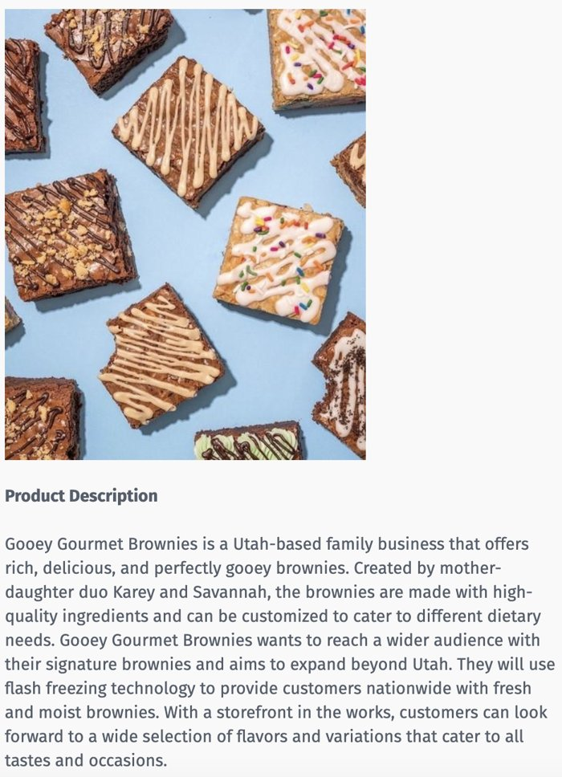
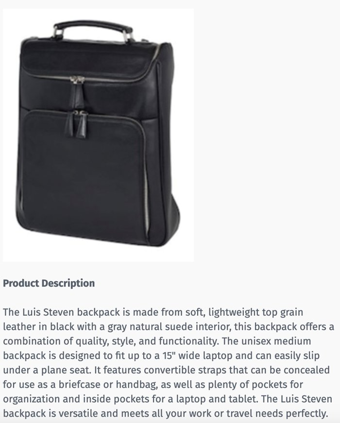
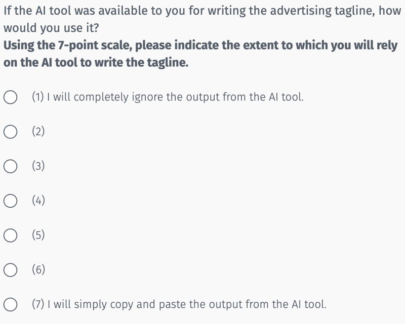
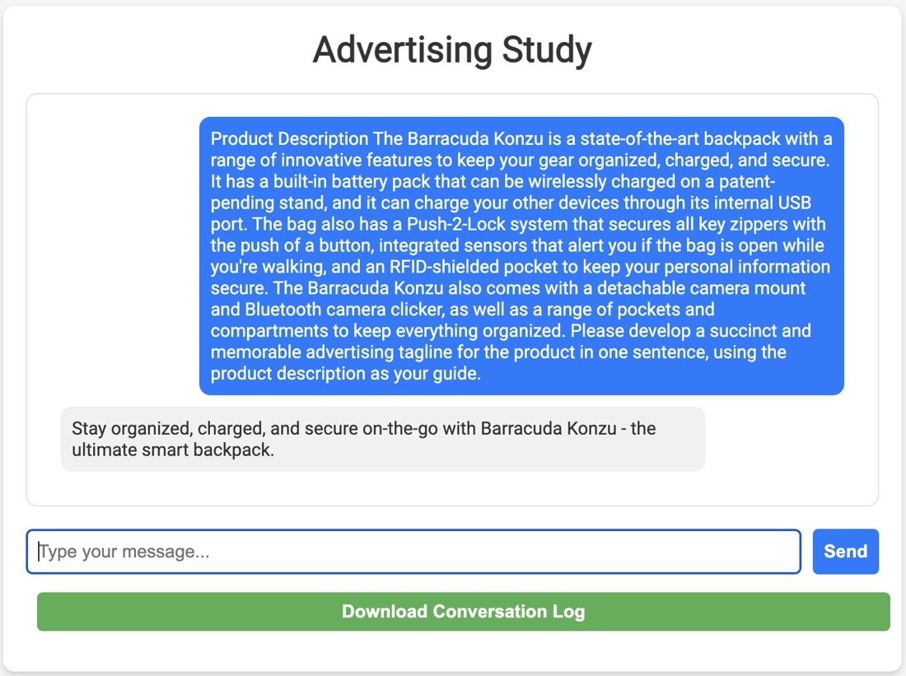

Research note · ISMS 2023
Who gains from writing with AI?
Two studies of people writing advertising taglines with ChatGPT. Less motivated people leaned on the AI more. For people who started out less creative, leaning on it made their taglines better. For people who started out more creative, it made no difference.
The question
Creativity research usually points to two ingredients: talent and effort. Effort, in turn, depends heavily on intrinsic motivation, the enjoyment of working on a hard problem for its own sake. Motivated people put in the work, and creative output follows.
Generative AI changes that equation. When a tool can produce a passable idea in seconds, the output no longer depends only on the person. It depends on how much the person hands to the tool, and on how good the tool is relative to the person. So we asked two questions:
- Who relies on AI in a creative task?
- Whose work actually improves when they do?
Our expectation was that creativity takes effort, that unmotivated people resist that effort, and that they would therefore lean on AI for convenience. We also expected reliance to rise when people think the AI is creative. Together, those two predictions form a simple grid:
Study 1 — Would you use it?
150 participants on Prolific wrote a one-sentence advertising tagline for each of two products, a brownie brand and a leather backpack. We measured their intrinsic motivation with items adapted from the Work Preference Inventory, such as "The more difficult the problem, the more I enjoy trying to solve it."


They then saw taglines ChatGPT had written for the same products, such as "Elevate your work and travel with the versatile Luis Steven backpack." They rated how creative those taglines were (innovative, original, novel, useful, effective, sensible) and said how much they would rely on the tool if they had it.

Holding perceived AI creativity at its average, more motivated people said they would rely on the AI less (B = −.176, p = .003). The effect sat mainly with people who were not impressed by the AI:
| When the AI's taglines seemed… | Effect of motivation on reliance | Reading |
|---|---|---|
| Less creative (−1 SD) | B = −.271, p = .001 | Motivated people would largely do it themselves |
| More creative (+1 SD) | B = −.080, p = .329 | Everyone would lean on it about equally |
The difference between the two slopes was marginal (interaction B = .082, p = .094), so this pattern is suggestive rather than settled.
Study 2 — Using it for real
Stated intentions are one thing. In Study 2, 156 students first wrote taglines for two products on their own, which gave us a baseline for each person's creativity. They then wrote taglines for two new products with a working ChatGPT interface built into the survey.

Afterward they reported how they had blended their own ideas with the tool's, on a scale from "100% AI tool, 0% own idea" to "0% AI tool, 100% own idea." The outcome of interest was improvement: how much more creative their AI-assisted taglines were than their own baseline.
Three results came out:
- Motivation again cut reliance. More motivated people used the AI less (B = −.515, p = .042), replicating Study 1 with real use.
- Creative people rated the AI as more creative (B = .411, p = .012). The people who needed it least thought most of it.
- Reliance helped only the less creative. Baseline creativity moderated the link between reliance and improvement (B = −.028, p = .032).
Does leaning on AI improve the work?
Effect of AI reliance on creativity improvement, by baseline creativity (unstandardized B).
What it suggests
The usual advice is that motivation drives creative work. With a capable AI in the loop, that picture gets more complicated. The people who gain most from collaborating with AI are the ones who start out less creative. They may be better off relying on the tool more, and low motivation, usually treated as a problem, is part of what gets them to do that.
That points to a practical design question: not whether to use AI, but in what order. Drawing on work on sequential human–AI decision structures (Shrestha et al., 2019), we proposed two sequences:
Limits
- Reliance was self-reported in both studies, although Study 2 followed real use of the tool.
- The task was short: one-sentence taglines. Longer creative work may behave differently.
- The samples were an online panel and students, and the AI was ChatGPT as of 2023. Models have improved a great deal since.
- Study 1's moderation was marginal, and neither study tested the proposed sequences directly.
References: Amabile, T. M., Hill, K. G., Hennessey, B. A., & Tighe, E. M. (1994). The Work Preference Inventory. Journal of Personality and Social Psychology, 66(5), 950–967. · Moreau, C. P., & Dahl, D. W. (2005). Designing the solution: The impact of constraints on consumers' creativity. Journal of Consumer Research, 32(1), 13–22. · Shrestha, Y. R., Ben-Menahem, S. M., & von Krogh, G. (2019). Organizational decision-making structures in the age of artificial intelligence. California Management Review, 61(4), 66–83.
← Back to writing